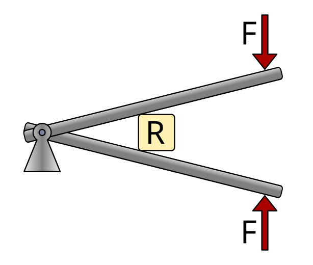
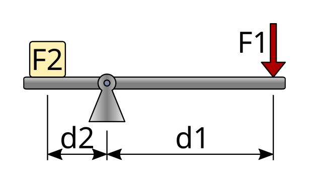
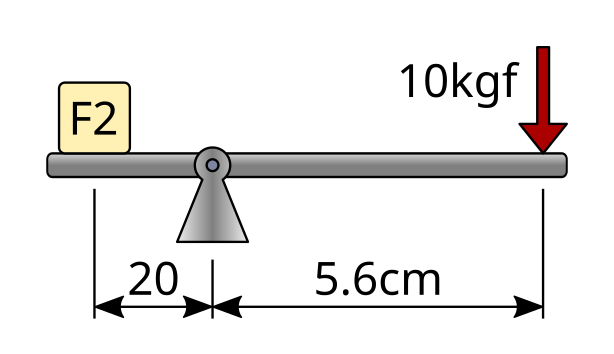
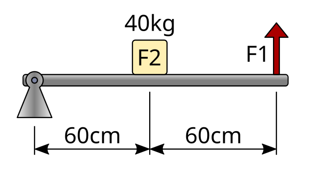

Levers¶
The lever is a simple machine made up of a rigid bar that rotates around a fixed point called the fulcrum or pivot point.
Levers allow us to multiply forces or increase displacements by applying the principle of moment equilibrium.
Table of contents:
Applications¶
Levers can be used to perform several functions:
- Transmit a force or movement from one point to another. This is the case of scissors, which transmit force and movement from finger holes adapted to the hand to the cutting blades.
- Increase the applied force. This is the case of a nutcracker or pliers.
- Increase the displacement. This is the case of an oar or a fishing rod.
Depending on the relative position of the applied force (F), the resistance or load (R), and the fulcrum (△), we distinguish three types of levers.
First-class levers¶
In first-class levers, the fulcrum is located between the applied force and the resistance.
In this type of lever, depending on the distances, you can gain force or gain displacement.

Examples of this type of lever are a seesaw, scissors, or pliers.

Second-class levers¶
In second-class levers, the resistance is located between the fulcrum and the applied force.
The fulcrum is located at one end of the bar.
This type of lever always multiplies the force; that is, a smaller force than the resistance is required.

Examples of this type of lever are a wheelbarrow, a nutcracker, or a corkscrew.
{kind=link}

Third-class levers¶
In third-class levers, the applied force is located between the fulcrum and the resistance.
The fulcrum is located at one end of the bar.
This type of lever does not multiply the force, but it allows greater displacement and higher speed at the end.

Examples of this type of lever are tweezers, our forearm when lifting the hand, or a fishing rod.

Calculation of forces and distances¶
For a lever to be in equilibrium, the moments (or torques) with respect to the fulcrum must be equal.
The moment is the product of a force and its distance from the fulcrum.
{kind=link}

The mathematical expression is as follows:
Where:
F1 = Applied force 1
d1 = Distance from force 1 to the fulcrum
F2 = Resistance or force 2
d2 = Distance from force 2 to the fulcrum
Distances can be measured in meters, centimeters, millimeters, inches, etc. However, both distances must always be in the same unit when performing calculations.
Forces can be measured in kilogram-force (kgf) or in Newtons (N), but they must be expressed in the same unit on both sides of the equation.
Pliers exercise¶
As an example, we are going to calculate the force exerted by a pair of pliers when a force of 10 kgf is applied to the handle, with the following distances:
{kind=link}

The first step is to write down the data of the problem and convert the distance values to the same unit, for example, to millimeters.

Next, we write the formula and substitute the known values:
Finally, we solve the equation and calculate the value of the unknown using the same units as the known force:
Wheelbarrow exercise¶
In this exercise, we are going to calculate the force required to lift a wheelbarrow carrying a load of 40 kgf. The dimensions of the simplified wheelbarrow are as follows:
{kind=link}

The first step is to write down the data of the problem. In this case, it is not necessary to convert the distance units, since both distances are given in centimeters.
As we can see, to calculate the distance from force 1 to the fulcrum, it is necessary to add the two distances shown in the diagram.
Next, we write the formula and substitute the known values:
Finally, we solve the equation and calculate the value of the unknown (F1) using the same units as the known force, kilogram-force:

Lever exercises¶
Questions about types of levers:
A hammer is used as a first-class lever to pull out a nail. A force of 12 kgf is applied at the end of the handle. The distance from the fulcrum to the applied force is 30 cm, and the distance from the fulcrum to the nail is 30 mm. What force acts on the nail?
Scissors operate as a first-class lever. A force of 8 kgf is applied to each handle. The distance from the pivot to the point where the force is applied is 9 cm, and the distance from the pivot to the cutting point is 3 cm. What force is exerted at the cutting point?
A bar is used as a first-class lever to lift a stone weighing 120 kgf. The distance from the fulcrum to the stone is 40 cm, and the distance from the fulcrum to where the force is applied is 160 cm. What force must be applied to lift the stone?
A nutcracker can be modeled as a second-class lever. The nut exerts a resistance of 15 kgf. The distance from the fulcrum to the nut is 4 cm, and the distance from the fulcrum to where the force is applied is 20 cm. What force must be applied to break the nut?
A bottle opener acts as a second-class lever. The force required to lift the cap is 25 kgf. The distance from the fulcrum to the cap is 2 cm, and the distance from the fulcrum to the applied force is 10 cm. How much force must we apply?
A manual press for inserting corks into bottles works as a second-class lever. The press has the following dimensions:
- The distance from the fulcrum to the cork (load) is 5 cm.
- The distance from the cork to the point where the operator applies the force is 50 cm.
If the operator applies a force of 11 kgf to the handle of the press, what force does the press exert on the cork?
Tweezers work as a third-class lever. A force of 6 kgf is applied with the fingers. The distance from the fulcrum to where the force is applied is 40 mm, and the distance from the fulcrum to the tip of the tweezers is 80 mm. What force is exerted at the tip of the tweezers?
The forearm can be modeled as a third-class lever. The biceps applies a force of 300 kgf. The distance from the elbow to the point where the biceps acts is 50 mm, and the distance from the elbow to the hand is 35 cm. With what force can the hand be lifted?
A fishing rod works as a third-class lever. The fisherman applies a force of 20 kgf with the hand by pulling the rod. The distance from the fulcrum (the lower end of the rod, resting on the ground) to the point where the force is applied is 50 cm, and the total length of the rod is 200 cm. What force does the fish exert on the rod?
Unidad imprimible¶
Unidad en formato imprimible, con preguntas.